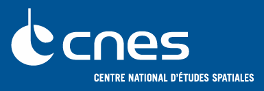
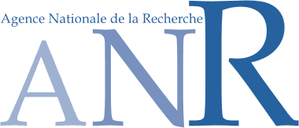

|
|
efluid SAS is the main sponsor of the REST API plugins in Joram:
- Rest/JMS bridge destinations.
- JMS 2.0 generic Rest API plugin.
- Joram administration Rest API plugin.
- JMX monitoring Rest API plugin.
|
|
|
France Telecom R&D is the main sponsor of many advanced
functions in Joram:
- Clustering facilities,
- High Availability Joram Server,
- AMQP and JMS bridge,
- WebSphere and WebLogic resources adapter.
|
|

|
The french space agency (CNES) uses Joram as main transport for its
new generation of Space Monitoring and Control (SM&C) middleware.
|
|
|
Bull is the main sponsor of the JCA1.5 Resource Adapter included in Joram
since version 4.1.
|
|

|
The French National Research Agency (ANR) has supported
Joram through many research projects. Currently ScalAgent D.T. is partner of 2 projects extending Joram:
-
SelfXL about Self-management of compleX
and Large scale systems.
-
ITEmIS about definition of a new generation SOA enabling IT and Embedded
Integrated Systems.
|
|
|
Thales Services SAS uses Joram for its Phoebus
product line, a generic tool for monitoring ground segment for spacecraft.
|